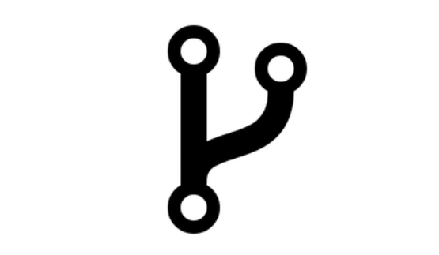
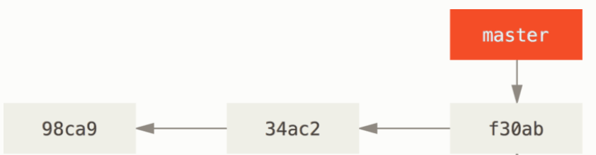
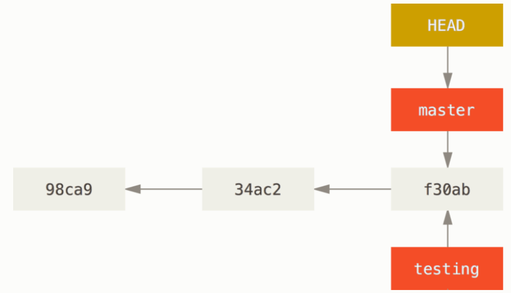
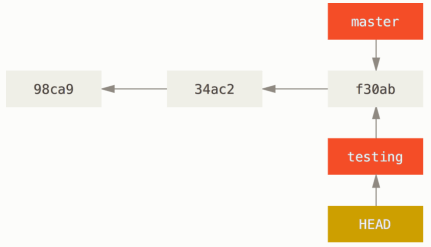
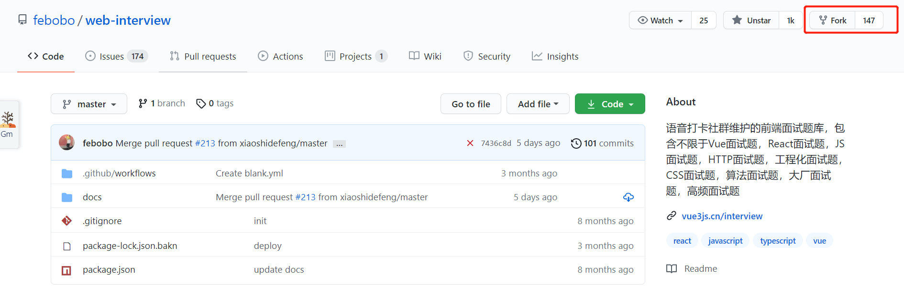
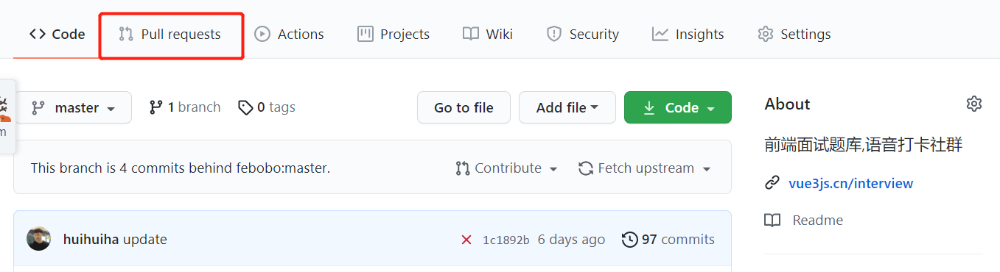
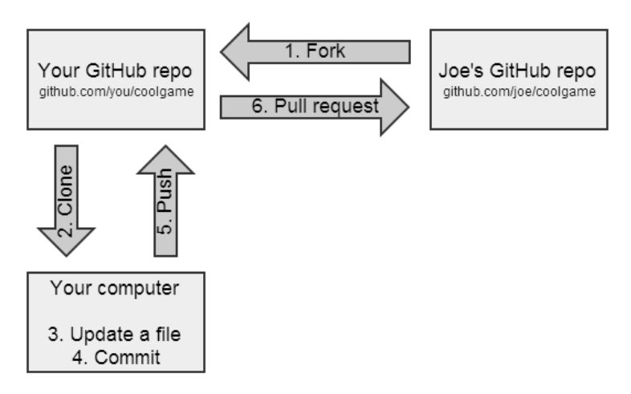
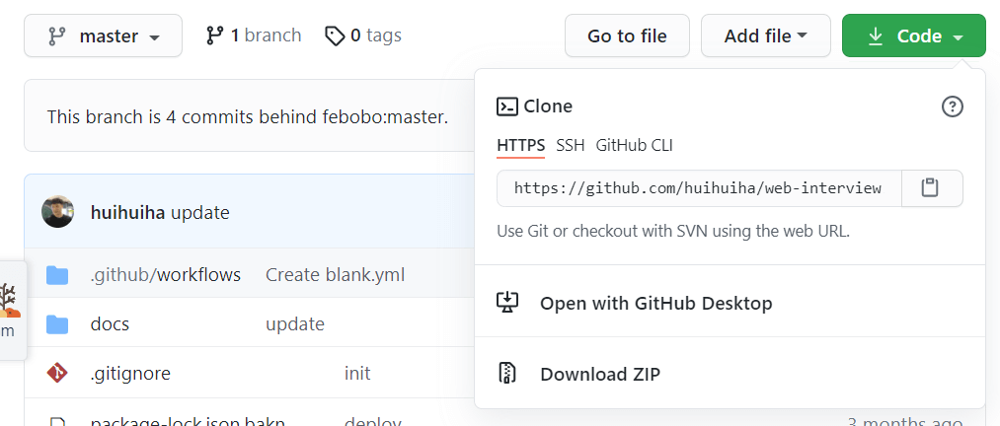

说说Git中 fork, clone,branch这三个概念，有什么区别?
参考答案
一、是什么
fork
fork，英语翻译过来就是叉子，动词形式则是分叉，如下图，从左到右，一条直线变成多条直线
转到git仓库中，fork则可以代表分叉、克隆 出一个（仓库的）新拷贝

包含了原来的仓库（即upstream repository，上游仓库）所有内容，如分支、Tag、提交
如果想将你的修改合并到原项目中时，可以通过的 Pull Request 把你的提交贡献回 原仓库
clone
clone，译为克隆，它的作用是将文件从远程代码仓下载到本地，从而形成一个本地代码仓
执行clone命令后，会在当前目录下创建一个名为xxx的目录，并在这个目录下初始化一个 .git 文件夹，然后从中读取最新版本的文件的拷贝
默认配置下远程 Git 仓库中的每一个文件的每一个版本都将被拉取下来
branch
branch，译为分支，其作用简单而言就是开启另一个分支， 使用分支意味着你可以把你的工作从开发主线上分离开来，以免影响开发主线
Git 处理分支的方式十分轻量，创建新分支这一操作几乎能在瞬间完成，并且在不同分支之间的切换操作也是一样便捷
在我们开发中，默认只有一条master分支，如下图所示：

通过git branch 可以创建一个分支，但并不会自动切换到新分支中去

通过git checkout可以切换到另一个testing分支

二、如何使用
fork
当你在github发现感兴趣开源项目的时候，可以通过点击github仓库中右上角fork标识的按钮，如下图：

点击这个操作后会将这个仓库的文件、提交历史、issues和其余东西的仓库复制到自己的github仓库中，而你本地仓库是不会存在任何更改
然后你就可以通过git clone对你这个复制的远程仓库进行克隆
后续更改任何东西都可以在本地完成，如git add、git commit一系列的操作，然后通过push命令推到自己的远程仓库
如果希望对方接受你的修改，可以通过发送pull requests给对方，如果对方接受。则会将你的修改内容更新到仓库中

整体流程如下图：

clone
在github中，开源项目右侧存在code按钮，点击后则会显示开源项目url信息，如下图所示：

通过git clone xxx则能完成远程项目的下载
branch
可通过git branch进行查看当前的分支状态，
如果给了--list，或者没有非选项参数，现有的分支将被列出；当前的分支将以绿色突出显示，并标有星号
以及通过git branch创建一个新的分支出来
三、区别
其三者区别如下：
- fork 只能对代码仓进行操作，且 fork 不属于 git 的命令，通常用于代码仓托管平台的一种“操作”
- clone 是 git 的一种命令，它的作用是将文件从远程代码仓下载到本地，从而形成一个本地代码仓
- branch 特征与 fork 很类似，fork 得到的是一个新的、自己的代码仓，而 branch 得到的是一个代码仓的一个新分支